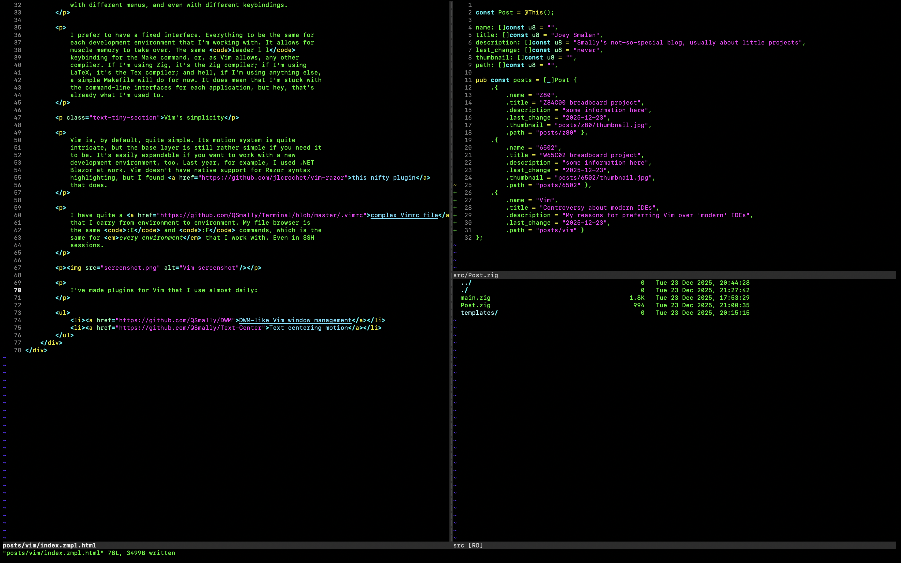

<div class="two-column underlined">
    <div class="content">
        <p>
            Over the years, I've repeatedly gotten comments about the text
            editor I use: Vim. <em>Terminal Vim.</em> And it's not that Emacs
            is better, although I've heard that one once before from a coworker
            using Doom Emacs. Funnily enough, it has Vim motions. Some comments
            about my Vim usings have a negative tone to them, and basically
            come down to sound like the question, "why would you do that to
            yourself?"
        </p>

        <p>
            I've used Vim for most of my years using text editors. I used
            <a href="https://atom-editor.cc">Atom</a> (discontinued in 2022)
            for tiny while, as well as Visual Studio Code, but I eventually
            resorted back to Vim for mainly two reasons.
        </p>

        <p class="text-tiny-section">The many IDEs</p>

        <p>
            There are maybe a thousand different IDEs that you could choose
            from. They all have their different purposes. Honestly, that's just
            the problem. <em>They are different.</em> For Objective C and Swift
            development, you must need to use Xcode; for integration with the
            C# environment, you could use Jetbrains Rider; and there are a lot
            of other examples that I could give.
        </p>

        <p>
            These IDEs usually have all different interfaces. There are some
            with different menus, and even with different keybindings.
        </p>

        <p>
            I prefer to have a fixed interface. Everything to be the same for
            each development environment that I'm working with. It allows for
            muscle memory to take over. The same <code>leader l l</code>
            keybinding for the Make command, or, as Vim allows, any other
            compiler. If I'm using Zig, it's the Zig compiler; if I'm using
            LaTeX, it's the Tex compiler; and hell, if I'm using anything else,
            a simple Makefile will do for now. It does mean that I'm stuck with
            the command-line interfaces for each application, but hey, that's
            already what I'm used to.
        </p>

        <p class="text-tiny-section">Vim's simplicity</p>

        <p>
            Vim is, by default, quite simple. Its motion system is quite
            intricate, but the base layer is still rather simple if you need it
            to be. It's easily expandable if you want to work with a new
            development environment, too, or just want a new ability right from
            within your favourite text editor.
        </p>

        <p>
            I have quite a <a href="https://github.com/QSmally/Terminal/blob/master/.vimrc">complex Vimrc file</a>
            that I carry from environment to environment. My file browser is
            always bound to the same <code>:E</code> and <code>:F</code>
            commands, my fuzzy finder is bound to <code>control d</code>, I
            have a directory search tool bound to the <code>:Ack</code>
            command, and lastly, I even have Thesaurus available, which is the
            same for <em>every environment</em> that I work with. Even in SSH
            sessions.
        </p>

        <p>
            I've made plugins for Vim that I use almost daily:
        </p>

        <ul>
            <li><a href="https://github.com/QSmally/DWM">DWM-like Vim window management</a></li>
            <li><a href="https://github.com/QSmally/Text-Center">Text centering motion</a></li>
        </ul>

        <p></p>
    </div>
</div>
